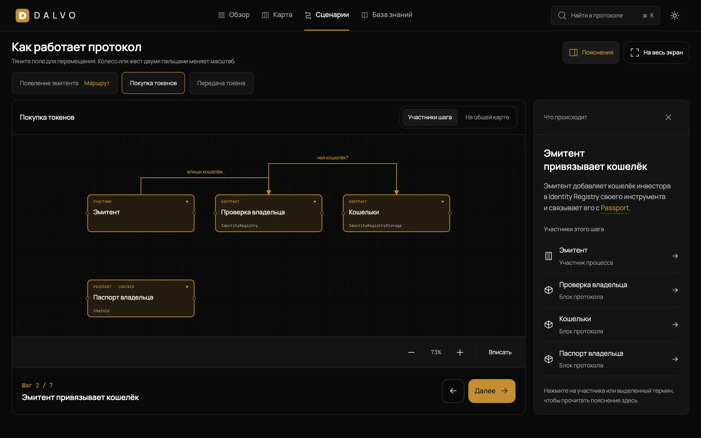
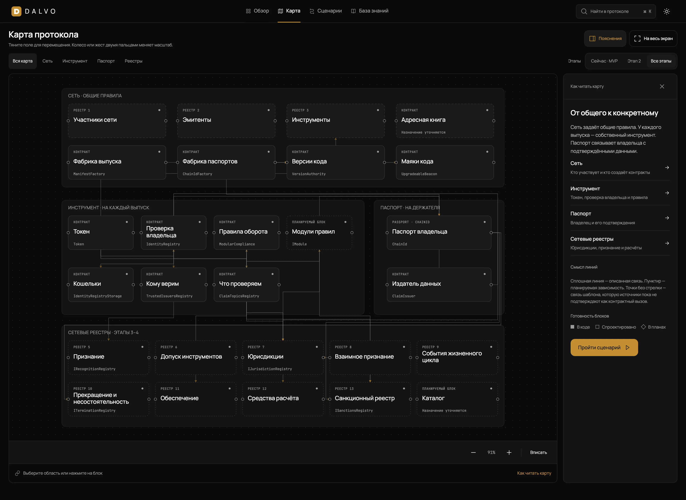

На экране только участники текущего шага: карта из 29 блоков стала историями.
- Мешало
- В черновой карте контрактов 29 блоков и 26 связей. Её должен понять человек без технической подготовки. Первую версию схемы я забраковал сам: слишком сложная.
- Решил
- Главным режимом стал пошаговый сценарий. На экране только участники текущего шага, к концу цепочка вырастает до полной. Вся карта осталась отдельным режимом. Готовность блока видна по рамке: в коде, спроектировано, в планах.
- Отверг
- Третью версию, на 11 страниц. Она объясняла, как работает протокол, а заказчику нужен был шаблон интерфейса. Четвёртая так и устроена: путь человека, раскладка экрана, экраны обзора, историй, карты и карточки блока.
Вся карта и шаг сценария. Один прототип, два режима.


Название, цвета и тексты изменены по NDA. Логика и структура настоящие.